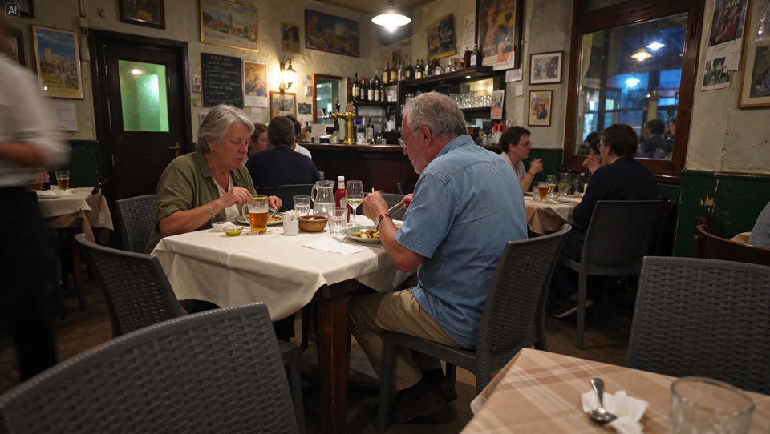

Seedream 5.5 official: candid snapshot of two older diners in a European bistro, slight underexposure, high-ISO grain and foreground occlusion
REA-071RealismSeedream 5.5 (ByteDance Seed; official model-page example)by ByteDance Seed (official Seedream 5.5 model page)2026-11-09

The official example of photographic "mistakes" as realism cues. The scene is ordinary (two older diners at a neighbourhood bistro on a summer evening, "unaware of the camera") and gets real-world wear (glasses, cutlery, breadcrumbs, worn wooden furniture). The realism comes from naming three faults on purpose: "Slight underexposure, subtle high-ISO grain and foreground occlusion", plus mixed light ("Warm pendant lights mix with traces of cool evening light"). Good for restaurant, hospitality and documentary-style ad frames that should not look staged.
Prompt
A candid horizontal snapshot inside a neighborhood bistro in Europe on a summer evening. Two older diners eat naturally at a table covered with cream linen, unaware of the camera. Glasses, cutlery, breadcrumbs and worn wooden furniture show everyday use. Warm pendant lights mix with traces of cool evening light. Slight underexposure, subtle high-ISO grain and foreground occlusion create an intimate, spontaneous atmosphere.
Our Seedance 2.5 adaptation
[ADAPTED for Seedance 2.5 by Grok Bot; not the creator's prompt. Follows the official BytePlus Seedance 2.5 prompt guide and its official sd25-pe prompt-optimizer skill: parameters only on the API line (not in the prompt body), subject + action + scene, then visuals, camera (move, subject, start, direction, arrival) and sound; only the source's own exclusions are kept.] API: duration 8, ratio 16:9, resolution 1080p, generate_audio true. 【Subject】Two older diners at a small table with cream linen in a neighbourhood bistro in Europe on a summer evening, unaware of the camera. 【Action】One tears bread and laughs quietly; the other lifts a glass, sips and sets it down among cutlery and breadcrumbs. 【Camera】Observational handheld from a nearby table, partly blocked by an out-of-focus glass and a chair back in the foreground; a slight reframe as the glass is lifted, no dolly moves. 【Visuals】Warm pendant lights mixed with traces of cool evening light from the window; slight underexposure, subtle high-ISO grain, worn wooden furniture and everyday wear on every object. An intimate, spontaneous snapshot feel. 【Sound】Murmured restaurant chatter, cutlery on plates, a distant street through the open door.
Tags: candid snapshot, older adults, bistro, mixed lighting, underexposure, high-ISO grain, foreground occlusion, everyday wear, documentary realism, Seedream 5.5